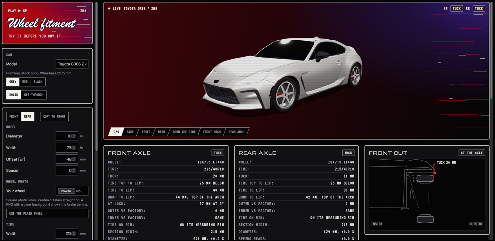

Git.io: https://refriderator.github.io/Car-Fitment-Tool
The Car Fitment Tool is live. It does one job: it shows how a wheel and tire will sit on a car before you buy them.
Pick a car, type in the wheel diameter, width and offset, add the tire size, and set ride height and camber. The 3D view moves with you, and the read-outs tell you whether the setup tucks, sits flush, pokes or rubs the fender lip. You can pull the fenders out with a slider and drop a photo of your own wheel onto the wheel face.
That is all it is right now. It checks the outside edge against the fender. It does not check the inside of the wheel well, the strut or the brakes, and the three cars in it are placeholders.
More is coming. Next up are the colors and a wider range for track width, then better car models. If a number looks wrong on your car, tell me.
